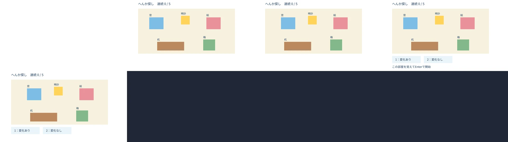
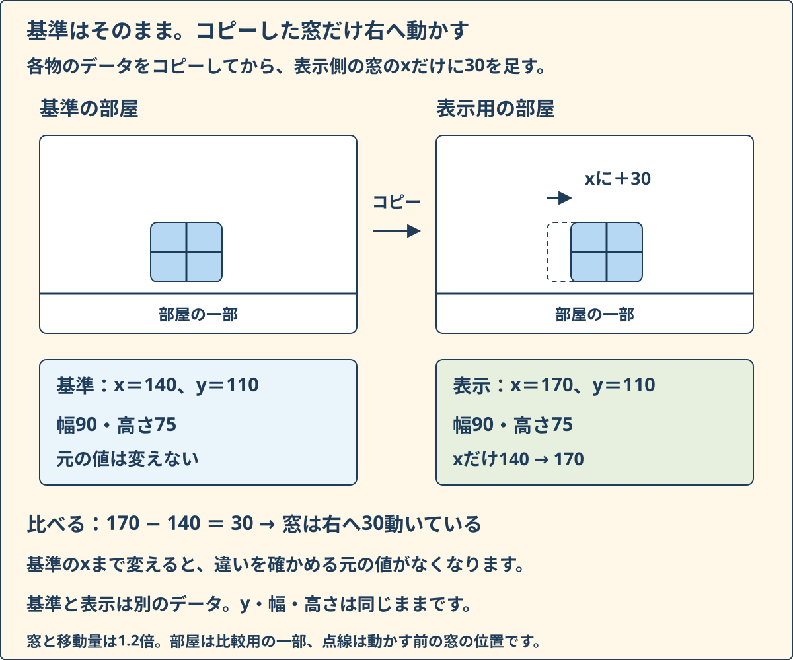

へんか探しを作る
基準の部屋を覚え、図形の変化があるかを見分けます。
始める前に
ZIPを展開してできたフォルダーでindex.htmlを開きます。ZIPにはひな型の3ファイルが入っています。
WindowsでZIPを展開する（動画）
作業用フォルダーのscript.jsを編集します。各ステップで保存し、index.htmlを再読み込みしてください。
ステップ 1：部屋の基準を描く
このステップの見本を図で見る
baseline[0] → x=140, y=110, w=90, h=75
位置と大きさを1つの物にまとめる
ctx.fillRect(140, 110, 90, 75)
同じ処理で時計・絵・机・箱も描く
ゲーム画面とコードの前後を見る

このステップの見本
この行を足す前 変わったコードの一例（script.js）
ctx.fillStyle = "#f7f2df"; ctx.fillRect(70, 55, 610, 285);
見本で確かめること
窓、時計、絵、机、箱が表示されます。
目標
窓や時計などの基準の部屋を描きます。
確認欄までは準備中です。作業を順に進め、確認欄で保存して動作を確かめます。
書く場所と置き換えるコード
部屋の基準を記録する
作業用フォルダーの script.js で、次の目印を探し、その直前に書きます。
目印
function start()書き足すコード
const baseline = [
{id:"窓", x:140, y:110, w:90, h:75, color:"#7cbde4", visible:true},
{id:"時計", x:340, y:100, w:55, h:55, color:"#ffd35a", visible:true},
{id:"絵", x:500, y:110, w:90, h:75, color:"#e9919b", visible:true},
{id:"机", x:190, y:265, w:170, h:55, color:"#bb895f", visible:true},
{id:"箱", x:480, y:250, w:75, h:70, color:"#83b88b", visible:true}
];
let scene, differences, state, streak, message;
配列は複数の値を順に並べます。baseline の各要素は物の情報です。窓の id は名前、x と y は左上の位置、w と h は幅と高さ、color は色、visible: true は表示することを表します。
表示する部屋を用意する
作業用フォルダーの script.js で、次の目印を探し、その直前に書きます。
目印
function update()書き足すコード
function nextRound() {
scene = baseline.map(item => ({...item}));
differences = [];
state = "playing"; message = "";
}
scene は baseline の各要素を {...item} でコピーして作ります。表示側を変えても基準は変わりません。= は右の値を左に入れ、; は文の区切りです。
基準との差を記録する
作業用フォルダーの script.js で、次の範囲を探して置き換えます。
置き換える範囲
differences = [];
置き換えるコード
differences = baseline.filter((item, i) => {
const shown = scene[i];
return item.x !== shown.x || item.y !== shown.y || item.color !== shown.color || item.visible !== shown.visible;
}).map(item => {
const shown = scene.find(other => other.id === item.id);
const change = item.visible !== shown.visible ? "見えない" : item.color !== shown.color ? "色が違う" : "位置が違う";
return {id:item.id, change};
});
filter() で位置、色、表示状態の違う物を選び、map() で名前と変化の種類を作ります。!== は同じでないか、|| はいずれかが成り立つかを調べます。
連続数を初期化して部屋を作る
作業用フォルダーの script.js で、次の範囲を探して置き換えます。
置き換える範囲
function start() {
}
置き換えるコード
function start() {
streak = 0;
nextRound();
}
streak を0にし、nextRound() で表示する部屋を作ります。
部屋の背景と連続数を描く
作業用フォルダーの script.js で、次の目印を探し、その直後に書きます。
目印
ctx.clearRect(0, 0, canvas.width, canvas.height);
書き足すコード
ctx.fillStyle = "#f7f2df"; ctx.fillRect(70, 55, 610, 285);
ctx.fillStyle = "#1f3d5b"; ctx.font = "20px sans-serif";
ctx.fillText("へんか探し 連続 " + streak + " / 5", 70, 32);
ctx はひな型の描画の道具です。fillStyle は色、font は文字の大きさと書体、fillRect() は左上と幅・高さを指定した四角です。
見える物と案内を描く
作業用フォルダーの script.js で、次の目印を探し、その直後に書きます。
目印
ctx.fillStyle = "#f7f2df"; ctx.fillRect(70, 55, 610, 285);
ctx.fillStyle = "#1f3d5b"; ctx.font = "20px sans-serif";
ctx.fillText("へんか探し 連続 " + streak + " / 5", 70, 32);
書き足すコード
(state === "reference" ? baseline : scene).forEach(item => {
if (!item.visible) return;
ctx.fillStyle = item.color; ctx.fillRect(item.x, item.y, item.w, item.h);
ctx.fillStyle = "#1f3d5b"; ctx.font = "16px sans-serif"; ctx.fillText(item.id, item.x, item.y - 8);
});
ctx.fillStyle = "#1f3d5b"; ctx.font = "18px sans-serif";
ctx.fillText(message, 70, 430);
forEach() は配列の物を順に処理します。visible が偽なら描かず、真なら色と位置、大きさで四角を描きます。id は物の少し上に表示します。
保存後の確かめ方
保存してゲーム画面を更新する（動画）
index.html を再読み込みします。窓、時計、絵、机、箱が表示されます。 この段階の見本を開く
小さな練習
窓の基準のx座標はいくつですか。
練習の答え
140です。
ステップ 2：表示側に変化を作る
このステップの見本を図で見る
scene = baseline.map(item => ({...item}))
元と同じ位置
item.x += 30 → 140 + 30 = 170
基準は140のまま。表示用の窓だけ右へ30px
ゲーム画面とコードの前後を見る
このステップの見本
この行を足す前 変わったコードの一例（script.js）
if (Math.random() < 0.5) {
見本で確かめること
再読み込みを繰り返すと、変化する場合としない場合があります。
目標
色・位置・表示のいずれかを変えます。
確認欄までは準備中です。作業を順に進め、確認欄で保存して動作を確かめます。
書く場所と置き換えるコード
変化させるかを決める
作業用フォルダーの script.js で、次の目印を探し、その直後に書きます。
目印
scene = baseline.map(item => ({...item}));
書き足すコード
if (Math.random() < 0.5) {
}
Math.random() は0以上1未満の数です。0.5未満の回だけ変化を作ります。
変える物の番号を選ぶ
作業用フォルダーの script.js で、次の目印を探し、その直後に書きます。
目印
if (Math.random() < 0.5) {
書き足すコード
const first = Math.floor(Math.random() * scene.length);
const count = 1;
for (let offset = 0; offset < count; offset++) {
}
first に対象の番号を選びます。count は1なので対象は1つです。for は回数を決めて繰り返します。
変化の種類を選ぶ
作業用フォルダーの script.js で、次の目印を探し、その直後に書きます。
目印
for (let offset = 0; offset < count; offset++) {
書き足すコード
const item = scene[(first + offset) % scene.length];
const kind = Math.floor(Math.random() * 3);
if (kind === 0) item.color = "#d46aaf";
else if (kind === 1) item.x += 30;
else item.visible = false;
kind は0、1、2のいずれかです。対象の色を変える、横位置 x を30増やす、見えなくする、のいずれかを行います。
保存後の確かめ方
再読み込みを繰り返すと、変化する場合としない場合があります。 この段階の見本を開く
小さな練習
窓のxを140から30増やすといくつですか。
練習の答え
170です。
ステップ 3：実際の差で答えを判定する
このステップの見本を図で見る
このステップの見本
この行を足す前 変わったコードの一例（script.js）
if (state === "feedback") ctx.fillText("Enterで次へ", 480, 384);
見本で確かめること
Enterで開始し、1または2を押すと結果が表示されます。
目標
変化あり・なしを選べるようにします。
確認欄までは準備中です。作業を順に進め、確認欄で保存して動作を確かめます。
書く場所と置き換えるコード
最初は基準を見せる
作業用フォルダーの script.js で、次の目印を探し、その直後に書きます。
目印
nextRound();
書き足すコード
state = "reference"; message = "この部屋を覚えてEnterで開始";
"reference" は基準を覚える場面です。Enter の案内も表示します。
正解と連続数を記録する
作業用フォルダーの script.js で、次の目印を探し、その直前に書きます。
目印
function update()書き足すコード
function finish(correct) {
if (correct) streak++;
else streak = 0;
message = (correct ? "正解！ " : "おしい！ ") + (differences.length ? "変化：" + differences.map(item => item.id + "は" + item.change).join("、") : "変化はありません");
state = "feedback";
}
correct が真なら連続数を1増やし、偽なら0に戻します。差の内容を文章にして回答後の状態にします。
選択を判定する
作業用フォルダーの script.js で、次の目印を探し、その直前に書きます。
目印
function update()書き足すコード
function choose(changed) {
if (state !== "playing") return;
const correct = changed === (differences.length > 0);
finish(correct);
}
changed は「変化あり」を選んだかを表します。差が1つ以上あるかと一致するか調べ、finish() に渡します。
回答の選択肢を描く
作業用フォルダーの script.js で、次の目印を探し、その直後に書きます。
目印
ctx.fillText(message, 70, 430);
書き足すコード
ctx.fillStyle = "#eaf5fb"; ctx.fillRect(70, 355, 180, 45); ctx.fillRect(270, 355, 180, 45);
ctx.fillStyle = "#1f3d5b"; ctx.fillText("1：変化あり", 90, 384); ctx.fillText("2：変化なし", 290, 384);
if (state === "feedback") ctx.fillText("Enterで次へ", 480, 384);
2つの選択肢を四角と文字で描き、回答後は Enter の案内を表示します。
キーで選択する
作業用フォルダーの script.js で、次の目印を探し、その直前に書きます。
目印
function gameLoop()書き足すコード
window.addEventListener("keydown", event => {
if (event.repeat) return;
if (state === "reference" && event.key === "Enter") { state = "playing"; message = ""; }
else if (state === "playing" && event.key === "1") choose(true);
else if (state === "playing" && event.key === "2") choose(false);
else if (state === "feedback" && event.key === "Enter") nextRound();
});
基準画面の Enter で開始し、1または2で choose() を呼びます。回答後の Enter は次の部屋を作ります。
クリックした位置で選択する
作業用フォルダーの script.js で、次の目印を探し、その直前に書きます。
目印
function gameLoop()書き足すコード
canvas.addEventListener("click", event => {
const rect = canvas.getBoundingClientRect();
const x = (event.clientX - rect.left) * canvas.width / rect.width;
const y = (event.clientY - rect.top) * canvas.height / rect.height;
if (y >= 355 && y <= 400 && x >= 70 && x <= 250) choose(true);
else if (y >= 355 && y <= 400 && x >= 270 && x <= 450) choose(false);
});
表示上のクリック座標を Canvas 内部の座標に直し、選択肢の四角の範囲に入るか調べます。

コピーした窓のxだけを140から170に変えます。基準の窓のxは140のままなので、位置の違いを比べられます。
保存後の確かめ方
Enterで開始し、1または2を押すと結果が表示されます。 この段階の見本を開く
小さな練習
基準と表示がすべて同じなら、変化ありとなしのどちらが正解ですか。
練習の答え
変化なしです。
ステップ 4：連続正解を数える
このステップの見本を図で見る
streak = 4 + 1、5 >= 5 → clear
5連続でクリア
streak = 0、0 >= 5 は false
連続記録は0に戻る
ゲーム画面とコードの前後を見る
このステップの見本
state = "feedback";
変わったコードの一例（script.js）state = streak >= 5 ? "clear" : "feedback";
見本で確かめること
5回続けて正解するとクリアになり、途中で間違えると0に戻ります。
目標
5回続けて正解するとクリアします。
確認欄までは準備中です。作業を順に進め、確認欄で保存して動作を確かめます。
書く場所と置き換えるコード
5回続いたらクリアする
作業用フォルダーの script.js で、次の範囲を探して置き換えます。
置き換える範囲
state = "feedback";
置き換えるコード
state = streak >= 5 ? "clear" : "feedback";
streak >= 5 は連続正解が5以上かを調べます。条件が成り立てば "clear"、そうでなければ "feedback" にします。
保存後の確かめ方
5回続けて正解するとクリアになり、途中で間違えると0に戻ります。 この段階の見本を開く
小さな練習
連続3回の後で不正解ならstreakはいくつですか。
練習の答え
0です。
ステップ 5：もう一度遊ぶ
このステップの見本を図で見る
state === "clear"
Spaceで再挑戦できる
start() → streak = 0; state = "reference"
基準を覚えてEnterで再開
ゲーム画面とコードの前後を見る
このステップの見本
この行を足す前 変わったコードの一例（script.js）
if (state === "clear") ctx.fillText("クリア！ Spaceで再挑戦", 470, 384);
見本で確かめること
クリア後にSpaceを押すと基準の部屋に戻ります。
目標
クリア後に最初の基準画面からやり直します。
確認欄までは準備中です。作業を順に進め、確認欄で保存して動作を確かめます。
書く場所と置き換えるコード
クリア後の案内を描く
作業用フォルダーの script.js で、次の目印を探し、その直後に書きます。
目印
if (state === "feedback") ctx.fillText("Enterで次へ", 480, 384);
書き足すコード
if (state === "clear") ctx.fillText("クリア！ Spaceで再挑戦", 470, 384);
クリア状態のとき、Space キーで再挑戦する案内を表示します。
Space で最初からやり直す
作業用フォルダーの script.js で、次の目印を探し、その直後に書きます。
目印
else if (state === "feedback" && event.key === "Enter") nextRound();
書き足すコード
else if (state === "clear" && event.key === " ") { event.preventDefault(); start(); }
終了後の Space で start() を呼び、連続正解を0に戻します。preventDefault() はキーによるブラウザーの標準動作を止めます。
保存後の確かめ方
クリア後にSpaceを押すと基準の部屋に戻ります。 この段階の見本を開く
小さな練習
再挑戦時に基準の窓のxは変わりますか。
練習の答え
変わらず140です。